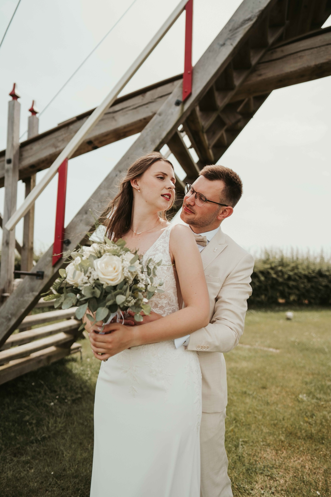

Gilles & Kiara · Trouwfilm
Trouwfilm / Aparte reportage

Fotografie & film
Jullie trouwdag in foto en film. Oprecht, ongedwongen en helemaal jullie.
Bekijk de 55 foto’sTrouw — jullie samen
Trouw — aandacht voor de details
Trouw — een portret voor twee
Trouw — het moment van de ringen
Trouw — de sfeer in de details
Trouw — een rustig moment
Trouw — dicht bij elkaar
Trouw — een blik voor twee
Trouw — samen in de omgeving
Trouw — even samen
Trouw — een spontane lach
Trouw — samen op weg
Trouw — het officiële moment
Trouw — een warme ontmoeting
Trouw — de mensen om jullie heen
Trouw — samen met wie telt
Trouw — tijd om te vieren
Trouw — helemaal samen
Trouw — een klein gebaar
Trouw — een handtekening voor later
Trouw — jullie eerste dans
Trouw — een avond om te beleven
Trouw — samen op de dansvloer
Trouw — de sfeer van de avond
Trouw — samen in het licht
Trouw — verzorgd tot in de details
Trouw — een blik om te onthouden
Trouw — samen aan tafel
Trouw — de avond komt tot leven
Trouw — dicht bij elkaar op de dansvloer
Trouw — de hele zaal viert mee
Trouw — voluit genieten
Trouw — de laatste details
Trouw — een moment voor elkaar
Trouw — een zacht moment
Trouw — een blik en een hand
Trouw — ieder vanuit een eigen hoek
Trouw — een stralend moment
Trouw — het verhaal in het detail
Trouw — samen verder
Trouw — aandacht voor de ceremonie
Trouw — de momenten ertussen
Trouw — woorden met betekenis
Trouw — een warme omhelzing
Trouw — iedereen hoort erbij
Trouw — samen op de foto
Trouw — een blijvend detail
Trouw — samen een herinnering maken
Trouw — ruimte voor een spontane foto
Trouw — met zorg klaargezet
Trouw — hand in hand
Trouw — een rustig portret
Trouw — ook zelf even vastleggen
Trouw — de mensen om jullie heen
Trouw — even naar elkaar kijken
Kijk, luister en beleef het verhaal.
Deze trouwfilm toont een aparte reportage.
Trouwfilm / Aparte reportage
Je vertelt wat je voor ogen hebt. We bespreken de sfeer, de locatie en wat je met de beelden wilt doen.
Een duidelijke aanpak en aandacht voor de details. Tijdens de shoot denk ik mee en leg ik vast wat jouw verhaal eigen maakt.
Een selectie en afwerking die passen bij de afgesproken stijl. Zodat je jouw verhaal kunt delen.
Er is meer om te ontdekken.
Jouw volgende verhaal
Deinze, België
Een shoot, nieuwe content of een verhaal in beweging? Vertel me wat je voor ogen hebt.
info@sdlvisuals.be